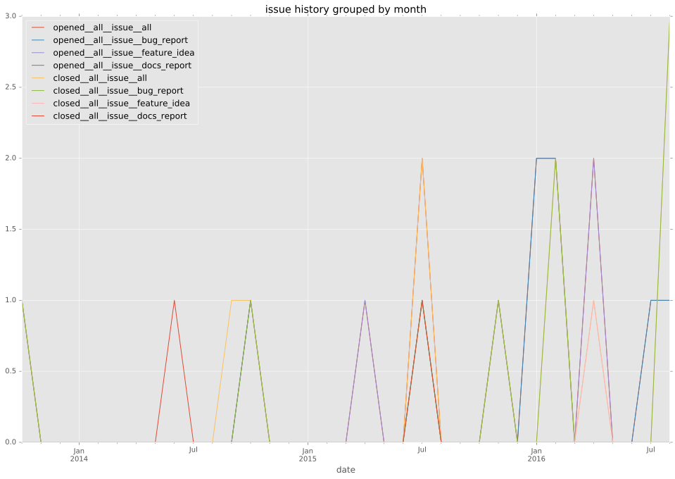
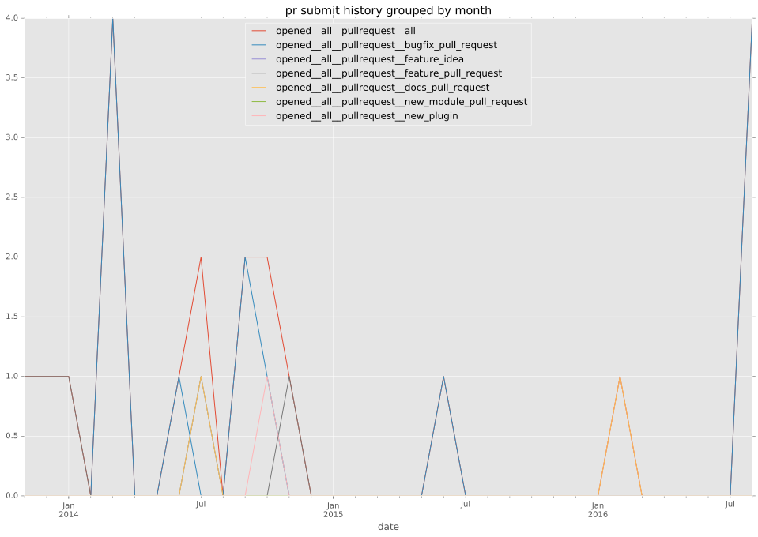
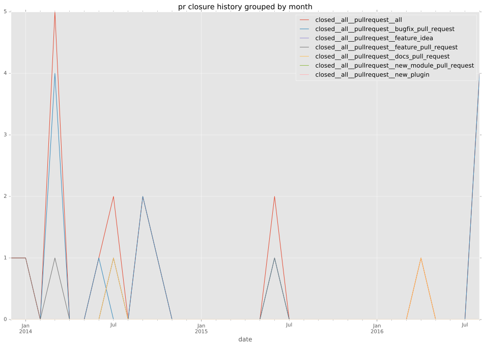
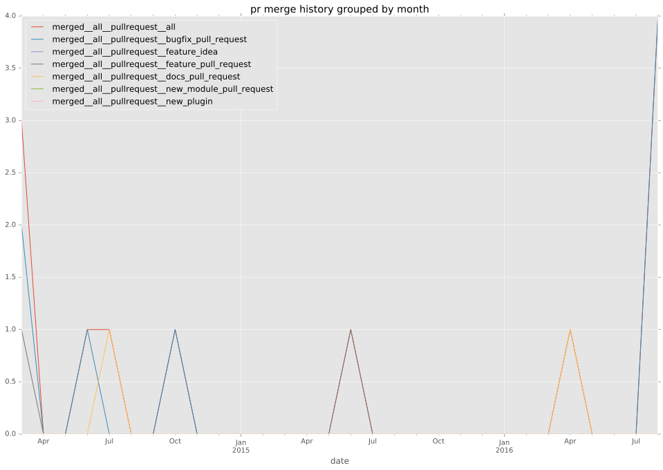

authors
- ovcharenko
- pyykkis
- ahtik
maintainers
- ovcharenko
- pyykkis
contributors
- pyykkis : 59 commits
- ovcharenko : 40 commits
- ahtik : 10 commits
- zacbri : 5 commits
- jctanner : 3 commits
- FauxFaux : 2 commits
- rgbkrk : 1 commits
- onnimonni : 1 commits
- mpdehaan : 1 commits
- lamby : 1 commits
- abadger : 1 commits
- Trozz : 1 commits
total issue counts
feature pull request: 5
docs report: 2
pullrequest: 19
docs pull request: 2
bugfix pull request: 12
feature idea: 3
issue: 15
bug report: 10
issue history

pullrequest history



days open by issue type
bugfix pull request
count: 20
std: 3.29073659967
min: 0
max: 11
median: 1.0
mean: 1.75
all
count: 44
std: 78.7544287154
min: 0
max: 359
median: 1.0
mean: 38.8636363636
pullrequest
count: 0
std: nan
min: nan
max: nan
median: nan
mean: nan
docs pull request
count: 4
std: 17.3205080757
min: 26
max: 56
median: 41.0
mean: 41.0
docs report
count: 2
std: 74.9533188058
min: 6
max: 112
median: 59.0
mean: 59.0
feature pull request
count: 7
std: 83.5783065953
min: 0
max: 198
median: 63.0
mean: 81.0
feature idea
count: 1
std: nan
min: 359
max: 359
median: 359.0
mean: 359.0
issue
count: 0
std: nan
min: nan
max: nan
median: nan
mean: nan
bug report
count: 10
std: 90.7708347678
min: 0
max: 232
median: 0.5
mean: 46.7
closures grouped by total days open